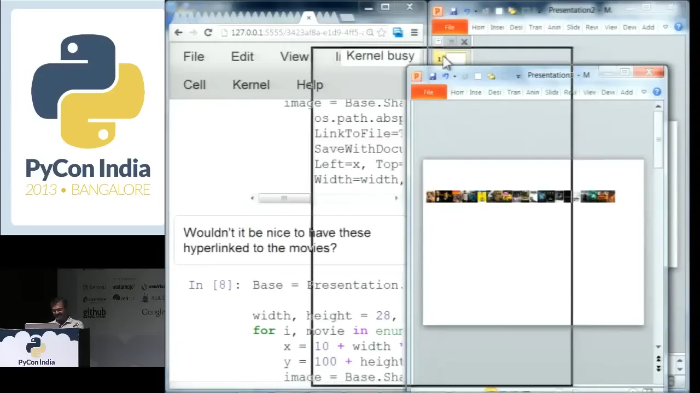
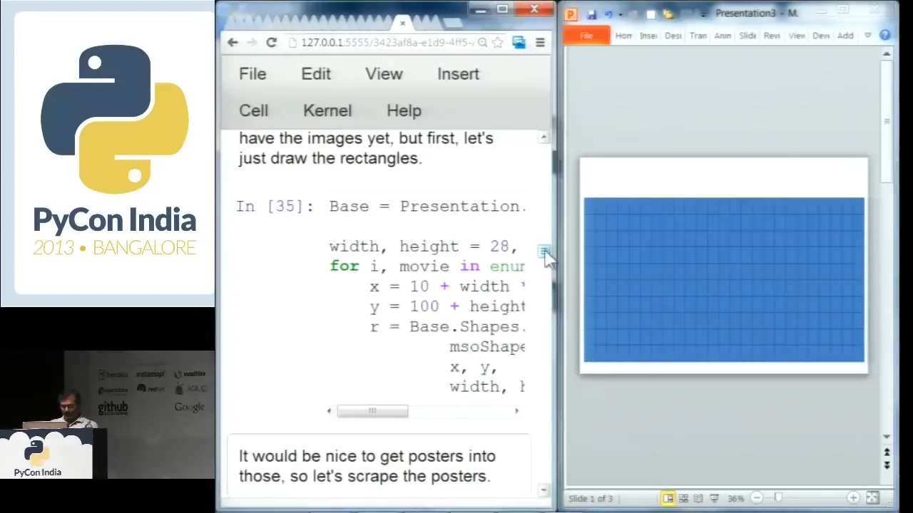
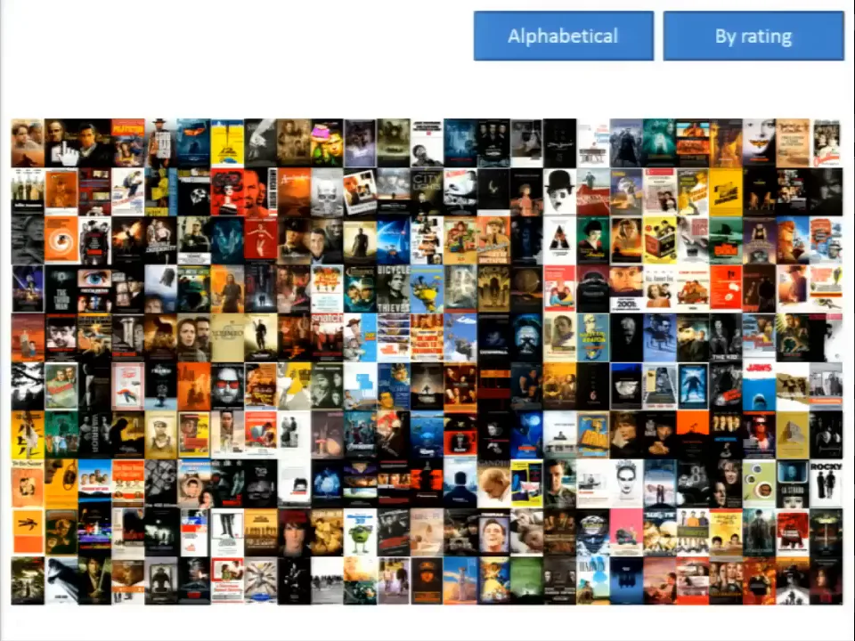
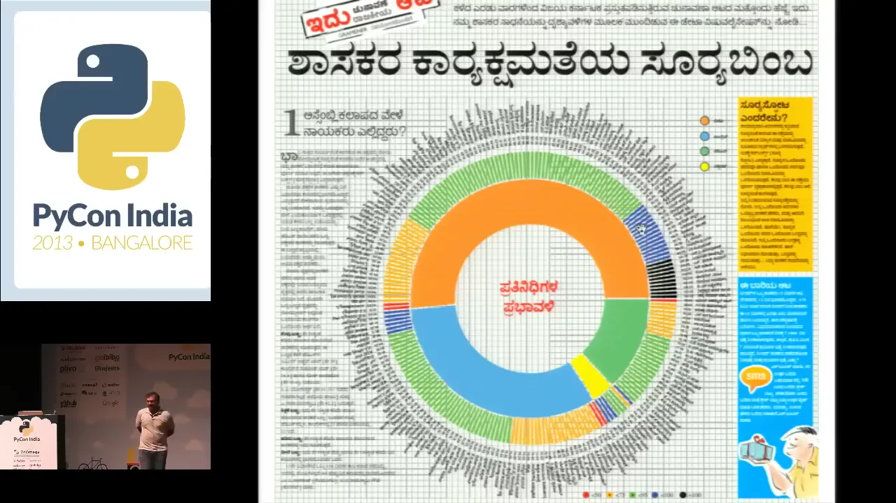
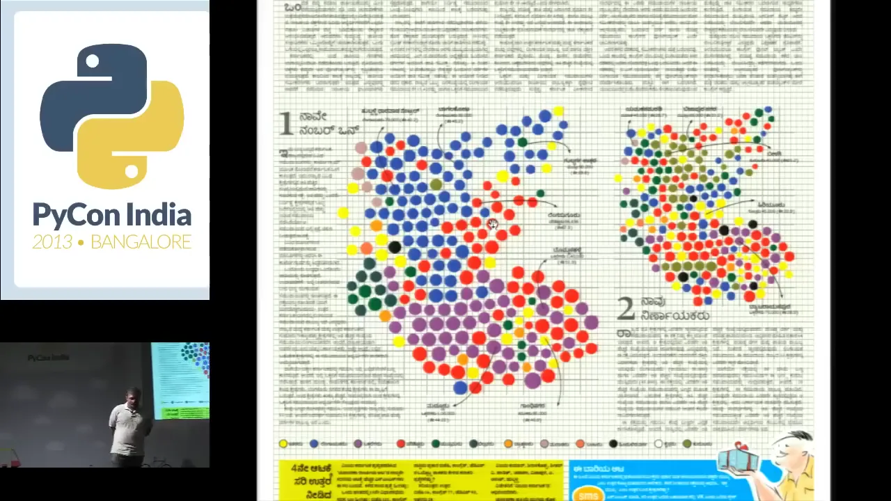
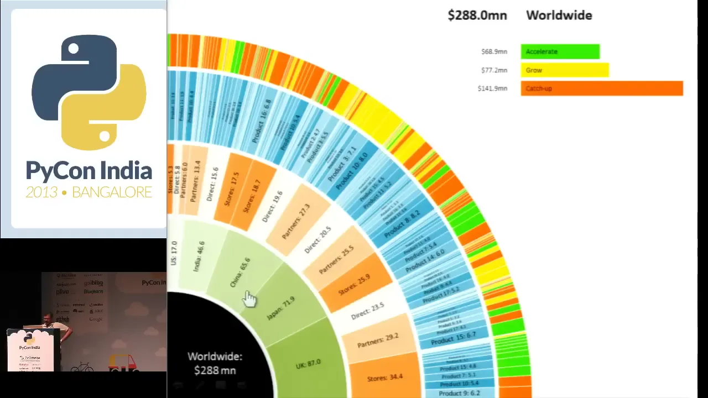
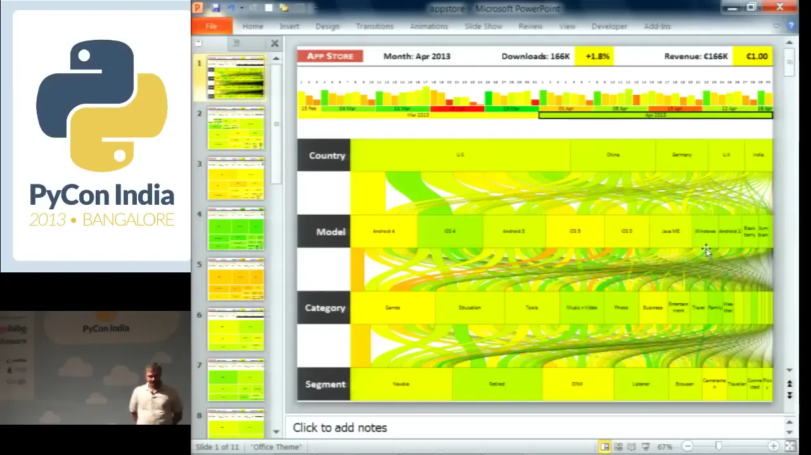
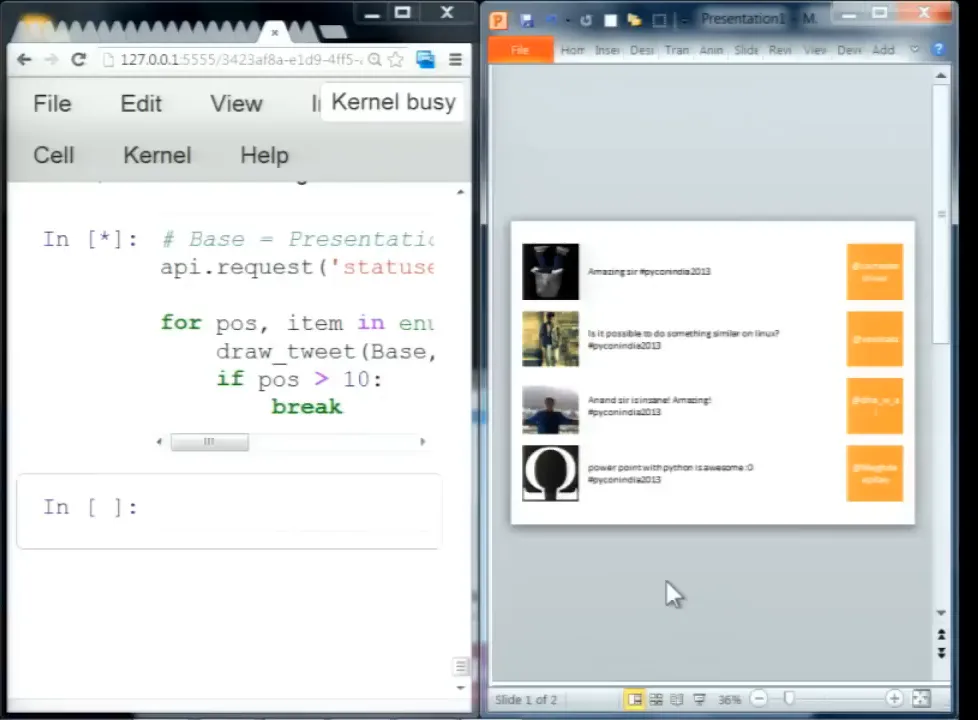

![A nine-panel comic titled Data Visualization in PowerPoint with Python, Anand S, 1 Sep 2013, PyCon India Bangalore. Panels show a frustrated man nudging boxes in PowerPoint; a speaker saying Python can control PowerPoint; a code panel drawing a circle; a robot arm drawing a grid; a speaker dragging a window over a wall of 250 movie posters while the audience cheers; posters rearranging between Alphabetical and By Rating buttons; newspaper graphics of MLA attendance and a constituency cartogram; revenue and app store dashboards; and a closing panel saying the slide deck had turned into software.](comic-page.avif)
Cold open
The man dragging the window
About eleven minutes in, Anand stops typing Python and does something odd at a Python conference. He grabs the PowerPoint window and drags it around the screen. He keeps dragging it while a program fills the slide with movie posters, one by one.
He has just watched PowerPoint slow down once he switched to that slide. His explanation gets a laugh.
“Like Heisenberg's uncertainty principle, if you observe it very carefully, tries to be a bit more slippery than it normally is. But there is a way around it.”
Anand S 11:31
The way around it:
“This is perhaps my greatest discovery of this year, that if you hold this, if you keep dragging it, it's pretty fast.”
Anand S 11:39


He isn't joking about how often he does it.
“I've spent several hours just keeping the PowerPoint window dragged so that this damn thing can get done in time for a project.”
Anand S, adding that his colleague Nikhil does the same 12:11
Hours of a working programmer's week spent holding down a mouse button so a slide renders in time for a client. That raises two questions. Why is a Python programmer generating slides at all? And why does the result have to be PowerPoint?
Why PowerPoint?
“What the heck is PowerPoint doing here?”
Anand opens by saying what the room is thinking.
“…a lot of you would be wondering what the heck is PowerPoint doing in a Python conference.”
Anand S, first sentence of the talk 00:01
He gives two answers right away. One is commercial: it “made me a decent chunk of money” 00:06. The other is about experience: “I've been programming in Python since 2009, I've been programming in PowerPoint since '96”. That gives him, he says, more credentials in PowerPoint than in Python, “probably by an order of magnitude.”
The real argument comes four minutes later. He describes a client who had seen the sophisticated version of the work and replied:
“Look, all of this is really fancy, but you know what? Ultimately, this is going to go into a presentation for one of the people in our board. … We want to be able to draw arrows, we want to be able to play around with it. And we're used to PowerPoint, could you just give all of this in PowerPoint instead?”
A client at Novartis, as Anand recalls it 04:08
Then he lists more: “I've heard the same thing at P&G, I've heard the same thing at Unilever, I've heard the same thing at Walmart, I've heard the same thing at Nokia.” 04:34 These are clients' requests as he tells them, not endorsements, and he doesn't say which work each paid for. The pattern is the point. Directors argue over slides, annotate them and forward them. A visualization that can't go into a deck doesn't reach the meeting where decisions get made.
He isn't pasting a chart image into a slide. Every circle, poster and button is a native, editable PowerPoint object, created by Python. A director can drag it, recolour it or add an arrow next to it, and the file still opens on any office laptop.
A slide is just shapes
The first demo is deliberately small. Anand types into an IPython notebook on the left of the screen. On the right, PowerPoint opens, a blank slide appears, and then a circle. Nobody touched PowerPoint. 01:18
The bridge is pywin32, a library that gives Python access to COM, Windows' way of letting one program drive another. Anand's summary: “The Component Object Model is one of those useful things that Microsoft's come up with where using almost any language, you can script almost any application.” 01:46 It only worked with Windows and an installed copy of Office: “firstly, you need Windows, you need PowerPoint, they cost money, or not.”
Application → presentation → slide → shape
This is the notebook's first code cell, unchanged. Click a line, or press Step, to see which object in PowerPoint it reaches. The drawing on the right is a diagram of the result, not a running copy of PowerPoint.
import win32com.client
Numbers like 12 (blank layout) and 9 (oval) come from Office's object model, documented in Microsoft's PowerPoint VBA reference. To avoid remembering them, Anand imported his own constants module, so later cells say msoShapeRectangle and ppLayoutBlank.
He knew how unimpressive it looked:
“Simple so far and unimpressive so far. What can we really do with it? Well, what you can really do with it is create any kind of visualization that you can do with HTML, with Processing, with Java, whatever, in PowerPoint.”
Anand S 03:49
He had used the same bridge before. A 2009 blog post shows him scripting PowerPoint from Python to draw an editable treemap of bank data. The PyCon talk took that technique further. Before moving on he showed that Excel answers to the same calls: an AddShape(9, …) circle and a few cell values appeared in a new workbook so fast that he had to tell the audience the script, not he, had done it.
Act I · 250 films
Two hundred and fifty rectangles
For the real demo he picked something he cared about. “…I'm a hardcore movie fan,” he reminds the room. He “sort of live[s] on” the IMDb Top 250, and he wanted to see all its posters at once: “I just like looking at those posters.” 05:20
The scraping takes a few lines: lxml parses imdb.com/chart/top, the first title is The Shawshank Redemption, and a loop saves each poster under an MD5-hashed filename. He skips through it: “this is meant to be a tutorial on PowerPoint in Python, not lxml” 06:56. Then he lays out empty boxes before adding any images.
Base = Presentation.Slides.Add(1, ppLayoutBlank) width, height = 28, 41 for i, movie in enumerate(movies): x = 10 + width * (i % 25) y = 100 + height * (i // 25) r = Base.Shapes.AddShape( msoShapeRectangle, x, y, width, height)


Swapping posters into the boxes takes one change. AddShape becomes AddPicture, which links to each image file on disk rather than embedding it, “because that way I don't have all of the images sitting and taking up space inside the document.” That is the cell that brought on the slow drawing, the Heisenberg joke and the window-dragging.
“So, what do I really do when I'm watching a movie at home? Having one window on the PowerPoint, keeping it dragged.”
Anand S 12:23
Name that poster
With the wall of posters up, the talk turns into a quiz. “The movies are fun, too. In fact, probably more fun than Python.” 12:36 He reads the top of the chart, Shawshank, Godfather I and II, Pulp Fiction, The Good, the Bad and the Ugly, then points at thumbnails he can't identify, and the audience calls out titles.


The room got American Beauty and Goodfellas. Someone offered Bourne Identity, and Anand admitted, “I wouldn't even know enough to verify that.” 13:13 The last one drew both Ran and Kagemusha: “Okay, at least there's some debate around it.” So he asks for what a website would do:
“Well, at the very least, I would like on hover to see what the movie is and when I click on it, get to the actual movie, right? Let's do that.”
Anand S 13:33
PowerPoint already had both features: a hyperlink, and a ScreenTip. Doing it by hand means right-click, Hyperlink, ScreenTip, 250 times. In code it's three more lines in the loop:
url = urljoin('http://www.imdb.com/', movie.get('href')) link = image.ActionSettings(ppMouseClick).Hyperlink link.Address = url link.ScreenTip = movie.text_content().encode('cp1252')
Then he hovered over the posters again. Mystic River. The Bourne Ultimatum. The Untouchables. Eternal Sunshine of the Spotless Mind, “got that right.” He clicked Goodfellas and IMDb opened. 14:23
The poster someone called Bourne Identity turned out to be The Bourne Ultimatum. That fits the record: in the IMDb chart archived that evening, Ultimatum is #189 and The Bourne Identity isn't in the Top 250 at all. Ran is #131; Kagemusha isn't listed. (We can't confirm from the video that the two hovers were on the same thumbnail.)
“So I have practically a web kind of environment, not too bad.”
Anand S 14:41
Act II · It moves
“I want both”
“Okay, let's go further. I haven't shown you the real cool stuff yet.” The grid has a problem every list has. Rank order is good for browsing and bad for finding things. To find Gandhi, he says, “It's an order of N search. It's not order of log N, which is what I'd like it to be.” 15:06
The obvious fix is to sort alphabetically. He wanted more than that:
“I don't want to either sort it alphabetically or sort it by rank, I want both. I want to be able to click on a button, and then it'll sort alphabetically, and click on another button, and it'll sort by rank.”
Anand S 15:26
And one more condition: “And being ambitious, I also want this to look nice.” He didn't want two slides or an instant jump. He wanted to see each poster travel, so the eye could follow it from one order to the other. 15:38
Sort the 250 yourself
He ran the cell, dragged the window again (“this case, it's doing a lot more”), started the slideshow and clicked Alphabetical. Below is a reconstruction you can click. The boxes, buttons and positions follow his notebook, and the films are the real Top 250 from the evening of the talk.
Click “Alphabetical”
Choose a chip, search, or click a box. Then switch orders and watch the same box move. You'll also see the motion path his code would give that poster.
Data: the IMDb Top 250 archived by the Wayback Machine at 23:29 UTC on 1 September 2013. His own scrape may be a few days older, and ranks moved daily. It matches what he read out on stage: Shawshank at #1, Three Colors: Red at #250, and movies[10] is a Star Wars film. Posters aren't reproduced. Each box shows the title's first character, coloured by decade. The order is Python's plain sorted() on the title, as in cell 18, so 63 films starting with “The” all land under T. Today's chart is different.
Here is what the room saw, in three frames two seconds apart:


Then came the claim that the D3 users in the room probably didn't expect:
“PowerPoint can do that, and the weird thing is it's actually easier to do this in PowerPoint than it is in D3, than it is in Processing, than it is in most other libraries, which is a bizarre discovery.”
Anand S 16:31
That is his 2013 opinion about this one effect, not a benchmark. It carries some weight because eleven months earlier, at the same NIMHANS convention centre, he had given a talk on beautiful visualizations with D3. He knew both tools. For 250 objects moving on a click, in a file a client would open, PowerPoint was less work.
One queue per order
The trick is that nothing gets re-sorted. Every poster stays where it was drawn. He gives the slide two interactive sequences, which he calls “like cues for animation”: one for alphabetical, one for rating. Each sequence holds 250 motion effects, one per poster, set off by clicking a button. 18:11
def animate(seq, image, trigger, path, duration=1.5): '''Move image along path when trigger is clicked''' effect = seq.AddEffect(Shape=image, effectId=msoAnimEffectPathDown, trigger=msoAnimTriggerOnShapeClick) ani = effect.Behaviors.Add(msoAnimTypeMotion) ani.MotionEffect.Path = path effect.Timing.TriggerType = msoAnimTriggerWithPrevious effect.Timing.TriggerShape = trigger effect.Timing.Duration = duration seq_alpha = Base.TimeLine.InteractiveSequences.Add() seq_rating = Base.TimeLine.InteractiveSequences.Add() # …inside the loop that draws each poster: animate(seq_alpha, image, trigger=button_alpha, path='M0,0 L{:.3f},{:.3f}'.format(…)) animate(seq_rating, image, trigger=button_rating, path='M{:.3f},{:.3f} L0,0'.format(…))
Two highlighted lines do most of the work. WithPrevious means each effect starts with the one before it, so all 250 posters move together. And the path is a short string: move from where you are (M0,0) in a straight line (L) to your place in the other order, given as a fraction of the slide's width and height. The rating sequence uses the same line backwards. The path for any film in the reconstruction above is computed with this same formula.
He pointed out that the path syntax “is very similar to the SVG path specification”: it's Microsoft's older VML path format, so curves are possible too. 19:12 Then he tried it the way a user would:
“It really is easy. So I can go down the G's, uh, where's F? Uh, there's Gandhi.”
Anand S, finding the film he couldn't find five minutes earlier 20:48
Act III · Is it useful?
“But is it useful?”
Having found Gandhi, he asks the question himself before anyone else can.
“Okay. So, now, that is interesting, but is it useful, is the question.”
Anand S 20:59
His answer: people “actually paid us money to do what I just showed you, a fair bit of money.” 21:05 He gives no amounts, and neither do we. The first example is a newspaper. Vijay Karnataka, a Kannada daily, wanted “something fancy” for its Karnataka election coverage. His team looked at HTML5 and SVG, and then went back to the question of what the newsroom could actually work with:
“Look, if I gave it to you as a PDF file, that's probably going to be the safest. If you wanted to make edits, however, it would have to be only PowerPoint. That's the only thing that we've got in common.”
Anand S, recalling the pitch 21:30
The newspaper's reply: “Yeah, okay, why don't you give it to us as both?” They ran a series of full-page spreads. When he puts one up, he can't read it, so he asks the room. “Anyone here reads Kannada?” Someone reads out the headline, in Kannada. “In English, please. Sorry, I don't speak Kannada either.” The translation from the audience: “Politicians' work ethic.” 22:09


This is where an editable file matters most. The names on that page are in a script the person who built it can't read.
“Now, it becomes a whole lot easier for them to just go in and correct typos around their names.”
Anand S, crediting Nikhil, who knows Kannada, for his help 23:22
Because the output was PowerPoint, the newspaper's own staff could fix a misspelled name without asking the programmers to run anything again. For a programmer who can't read the language, the editable file is a safeguard.
No map? Draw circles
Another spread showed a survey on why people vote: for the party, the caste or the candidate. Each constituency is a circle, coloured by its most common answer and sized by its population. Laid out properly, it would be a map. But the team had no up-to-date boundaries after the constituencies were redrawn.


“Very often, you'll be in situations where you don't actually have a map. And a cartogram is a phenomenal way of escaping that and still making it look cool.”
Anand S 24:55
The shortcut also adds something: “I'm not only able to bring in the color that I can put against that constituency, but I can also use size as an extra dimension for something else.” A third spread grouped the topics MLAs asked about in the Assembly by party. All of it, he says, was “done in PowerPoint,” although “not quite interactive.” That was next.
An application inside a deck
For one company, a revenue breakdown: worldwide, then countries, then channels, then products, each segment coloured by the action needed. (“Anonymized numbers, by the way.”) He clicks China and gets China's slide. He clicks Product 8 and gets Product 8's. A Worldwide button takes him back. 26:57




“So, I have an interactive application in PowerPoint that is data driven.”
Anand S 27:51
The second was an app-store dashboard: downloads by day, week and month, broken down by country, device model, category and customer segment, with each bar coloured by whether growth was up or down. It's a dense web of bars, flows and drill-down slides, and each click opens another level. Asked in the Q&A whether he had scripted it, he said: “Oh yes, all of this is created using Python, right? I can't draw this much by hand.” 40:15
He doesn't argue that PowerPoint is the better tool. The audience for this work had PowerPoint, used it every day, and could open, present, annotate and forward a .pptx without anyone's help. The file was the delivery. The notebook's “Real-life examples” cell lists the same three projects.
Coda · live
Beer, live
With a few minutes left he tries a last one: “what if we could take Twitter data and do a bit of live streaming of that.” The notebook uses the TwitterAPI package (“I was Googling yesterday for what might be a good package”) and a draw_tweet function that puts a profile picture, the tweet text and an orange handle box on the slide. 31:07
He needs a topic that people tweet about all the time. “Beer, maybe?” 32:11 What follows is a real live demo:
“Okay, got an error.” 32:19
Someone in the audience says something about the hashtag. “No, I actually just meant beer. I was hoping that the hashtag would be more common.” 32:43
“Oh, I'm not on the first slide. Good point.”
Then the slide fills up. “Beer is pretty popular.” 33:00
The loop stops at twelve tweets (if pos > 10: break, as he says on stage). Then he switches the search to the conference hashtag and asks for questions as tweets. 33:42 A couple of minutes later the audience's tweets appear on the slide:


The second tweet is the question the Q&A would keep coming back to. It works, but does it work anywhere else? The 2013 Twitter streaming API he used no longer exists, so this demo can't be re-run today.
The room asks the practical questions
Nobody asks whether it's cool. The questions are about portability, effort and distribution, which is a good sign the audience took it seriously.
win32com.client drive other applications?Where the work ends
The Q&A covers both sides of the deal. The output went anywhere: any office laptop could open, present, edit and forward it. Producing it went almost nowhere: Windows, a licensed copy of Office, a COM bridge, and sometimes a person holding a window mid-drag. A Linux user in the room asked the obvious question by tweet. Anand's answer to the distribution question was to move generation to a server that writes .pptx files directly, which shows he saw the limit too.
His Keynote answer generalises beyond PowerPoint:
“When you're manually drawing stuff, the effort is linear. When you're programmatically doing it, the effort is completely non-linear. … You're saying, ‘Okay, I've got all of this data. I'll put in 10,000 objects if I need to.’”
Anand S 35:31
The posters were the eye-catching part of the talk; the more useful lesson was about where the work goes. The newspaper editors and directors he described never saw the Python. They saw a file they already knew how to use. The most interesting programming environment that afternoon wasn't the notebook on stage. It was the program his clients already opened every day.
That last line is our summary of the talk, not something he said on stage.